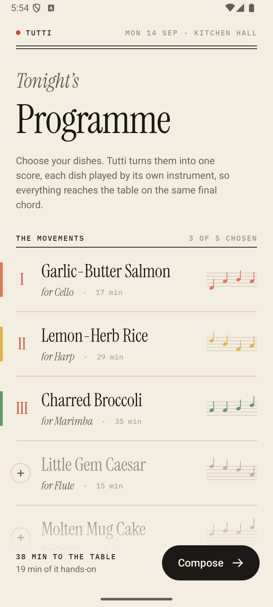
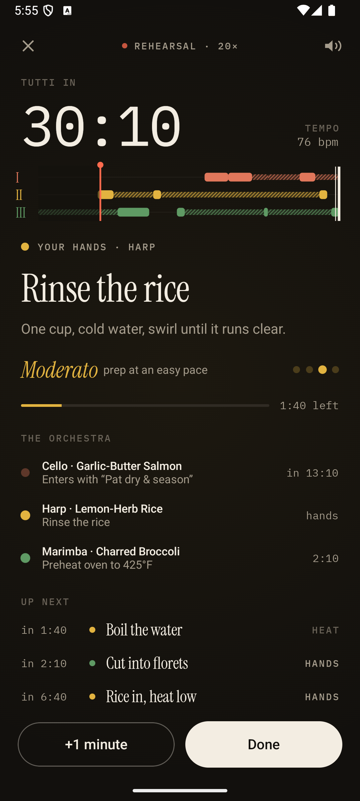
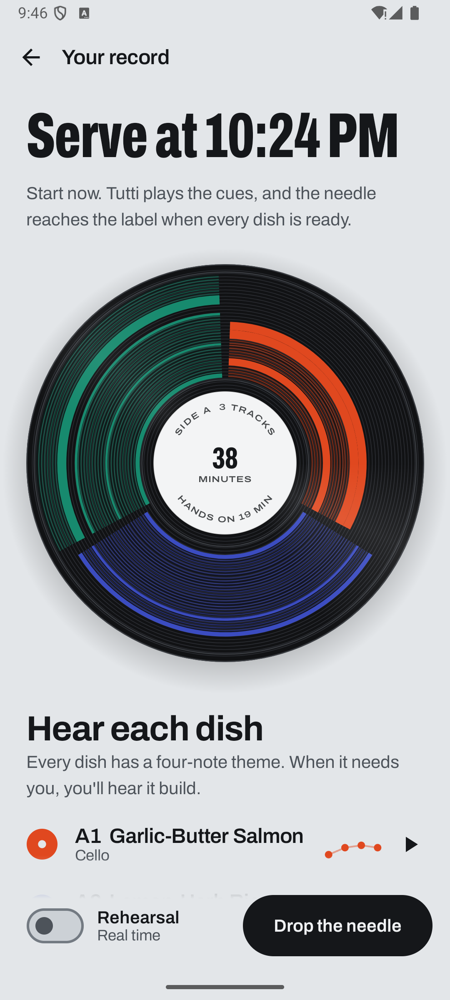
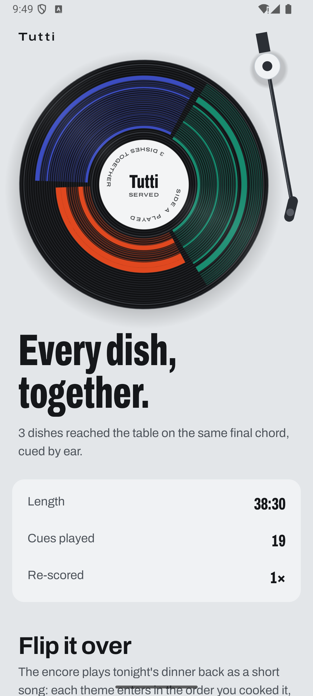
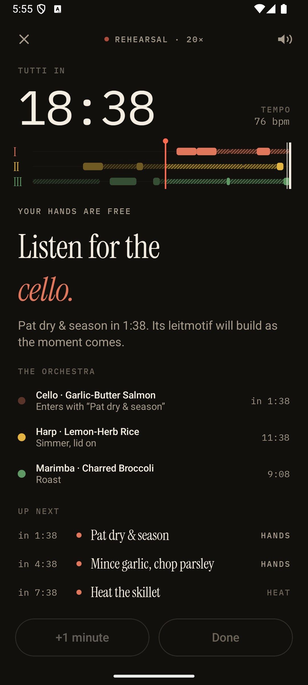
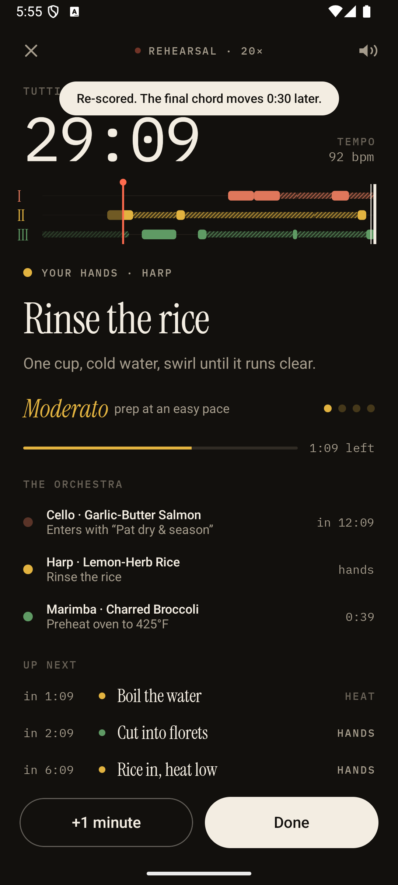
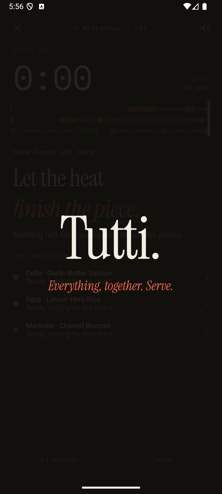

Every dish becomes a groove with its own instrument. The tonearm tracks the cues, and when the needle reaches the label, everything is ready.


Timers beep, but they can't tell you which dish, what to do, or how long you have. It's hardest on new cooks, on anyone with ADHD time blindness, and on anyone with flour on their hands.
Choose dishes. The record rebuilds as you go.

Scheduled backwards from the final chord.
Live music cues every step. Chop on the beat.

Everything lands together. Then flip it over.

Anything already on the heat stays put. Everything not yet started is re-planned on the spot, within each dish's tolerances: how long the rice can rest, how early the salad can be dressed.


The whole orchestra plays the final chord and the record spins down. Flip it over and the encore plays tonight's dinner back as a short song.
Multi-dish meals without the panic. Tutti does the juggling; you do the cooking.
Time you can feel through tempo and build-ups, not numbers you have to track.
Audio cues, haptics, and one amber light you can read from across the counter.
Holidays and family dinners: everything hot at once is exactly the problem.
Steps, hands-on or heat, allowed gaps, hold tolerance, tempo marking.
Backward scheduler: one lane for your hands, hill-climb repair, live re-scoring.
Session clock, cues, build-ups, haptics, rehearsal speed.
Sample-accurate sequencer and arrangement rules.
48 voices, 12 instruments, reverb. Zero allocations while rendering.
Voice control, for when your hands are messy.
Paste a recipe link and Tutti presses the record.
Smart ovens and thermometers send their own cues.
Two cooks, two lanes, one record.
Haptic cues on your watch.